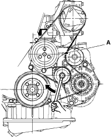

- Inspect the belt for cracks and damage. If the belt is cracked or damaged, replace it.
- Check the pointer (A) on the automatic belt tensioner is not beyond the edge of the indicator (B) on the tensioner bracket. If pointer is beyond the indicator, replace the drive belt.

- Remove the splash shield (see step 19 on page 5-5).
- Move the automatic belt tensioner to relieve tension from the drive belt and install the lock pin (A) through the automatic belt tensioner arm and tensioner bracket then remove the drive belt.
